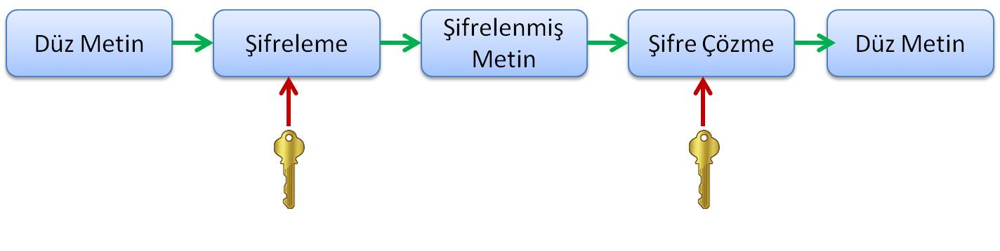

- Kriptoloji, Yunanca krypto’s (saklı) ve lo’gos (kelime) kelimelerinin birleştirilmesinden oluşturulmuştur.
- İletişimde gizlilik bilimi olarak değerlendirilmektedir
- Sistemler arası bağlantılarda ya da herhangi iki nokta arasındaki haberleşmede verinin güvenli bir şekilde gittiğinden emin olmak için gönderilen verinin şifrelenmesi gerekir.
- Böylece açık haberleşme kanalları kullanılarak verinin güvenli bir şekilde ulaştırılması sağlanır.

- Günümüzde kriptoloji, matematik, elektronik, optik, bilgisayar bilimleri gibi birçok disiplini kullanan özelleşmiş bir bilim dalı olarak kabul edilmektedir.
- Kriptolojinin iki temel alt dalı vardır:
- Kriptografi, belgelerin şifrelenmesi ve şifresinin çözülmesi için kullanılan yöntemlere verilen addır.
- Kriptoanaliz, kriptografik sistemlerin kurduğu mekanizmaları inceler ve çözmeye çalışır.
- Kriptoanaliz, kriptolojide ortaya konan şifreleme sistemini inceleyerek, zayıf ve kuvvetli yönlerini tespit etmek için kullanılır.